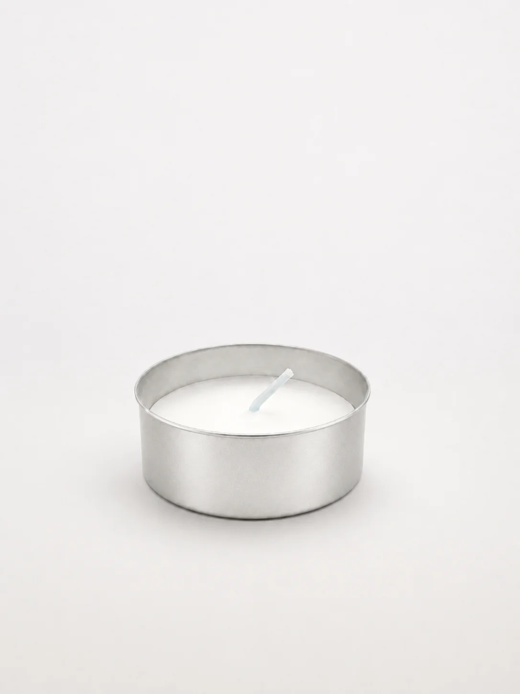

Candele profumate per arredare e impreziosire ogni ambiente della casa.
Prodotti
Candele per esterni e interni, pensate per ogni stagione all'aperto.
Ceri, lumini e arredi sacri per chiese, santuari e cerimonie religiose.

Cereria Cicogna · Articoli Liturgici · Lumini